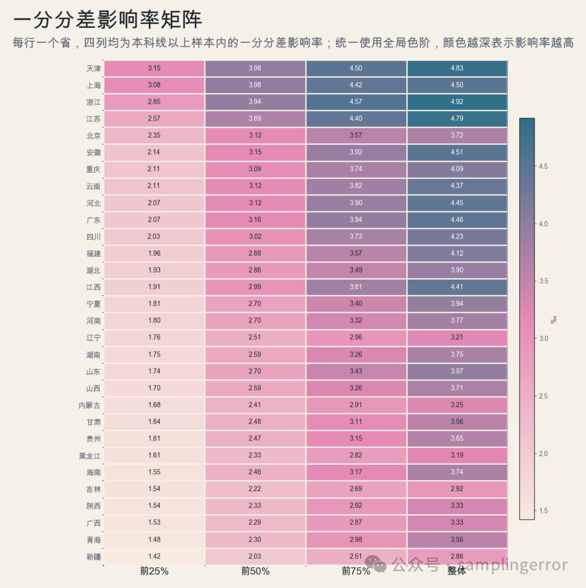
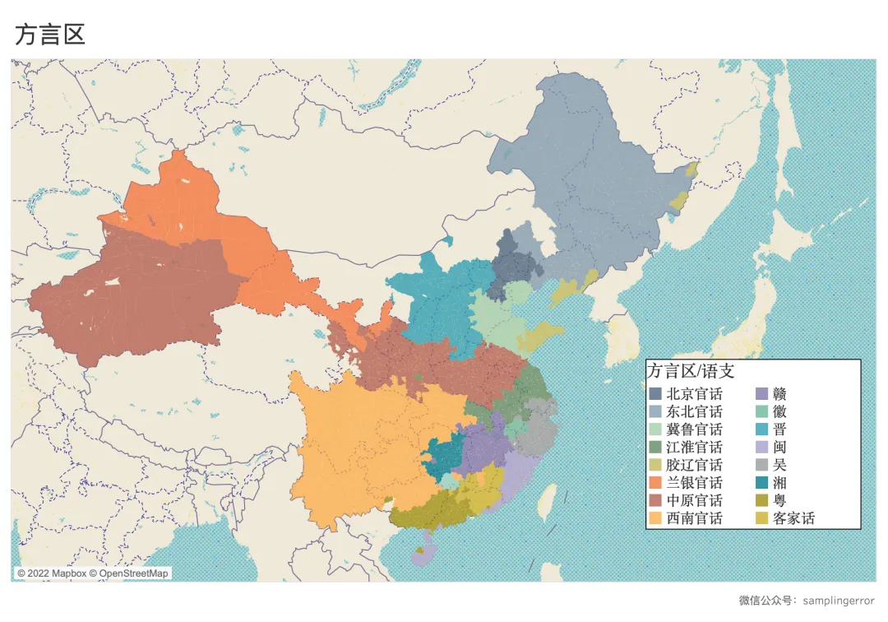
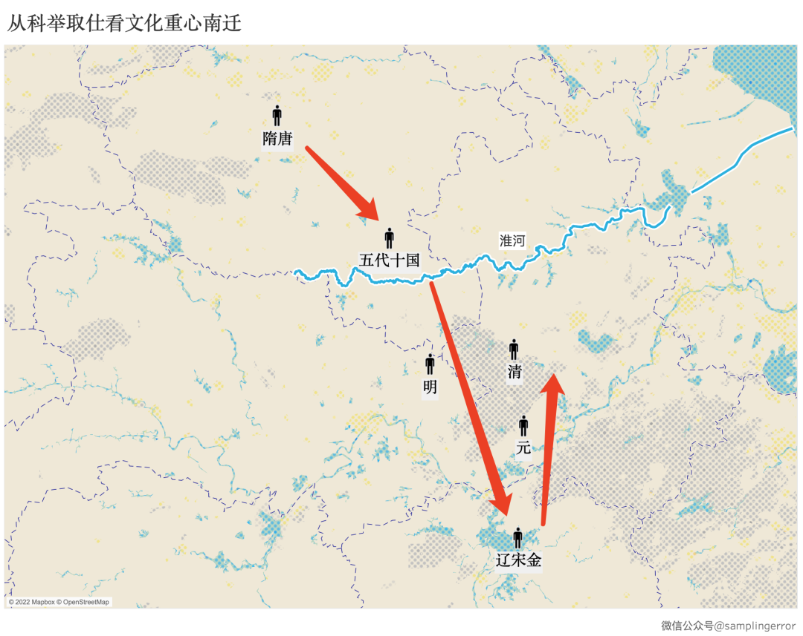
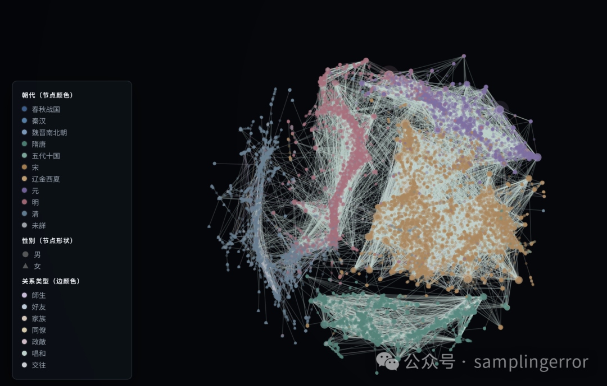

Researcher / data scientist / visual maker
Seeing society through data.
I work across computational social science, urban data, extreme-value risk, and decision-oriented analytics, turning complex evidence into research, tools, and visual systems. I am open to data science, actuarial, and risk analytics roles.
Research
Questions, methods, results.
Selected studies from the archive, with the original paper, slides, or project notes attached.
Research areas
Skills & methodsFilter research projects
Showing all research projects


Why does everywhere feel far away in Beijing?
An open-data comparison of Beijing and Shanghai, examining service density, transit access, roads, and the urban form behind everyday distance.

Women’s names in ancient China
Using a historical database, this short study traces patterns in the names preserved for women in ancient China. It also presents descriptive statistics across dynasties, asking how unevenly women appear in the surviving historical record.

Gaokao competition structure across provinces
A distribution-based analysis of score density, high-score concentration, and the relative supply of top-university seats across China.

Administrative borders vs. cultural boundaries
A historical-geography study of the differences between formal administrative divisions and the cultural boundaries that emerged across China.

China’s cultural center moves south
A spatial study of the southward movement of cultural influence, approached through the geography of imperial examination success.
Visualizations
Projects that let data speak.
Interactive projects and visual research objects. Open a project to explore the data, not just the picture.


 Open interactive ↗
Open interactive ↗
Women poets & literary recognition visualization
A visual companion to the research: historical figures, social ties, kinship, and literary collections made explorable.

Open interactive ↗Historical figures network visualization
A searchable network of relationships between historical figures, built from CBDB records and designed for tracing connections across time.


 Open archive ↗
Open archive ↗
City data visual: urban space visualization
A growing visual archive of built space, population fields, cultural geography, terrain, and hydrology across China.
Ways of looking.


Seven short demos from the city building-age series, kept together as one moving layer of the archive.
Built-space timelines / 10 citiesSelected image set from the City Data Visual repositorySources & attribution ↗
Photography
Elsewhere.
Eleven city archives. Click a city to open its full photography wall.